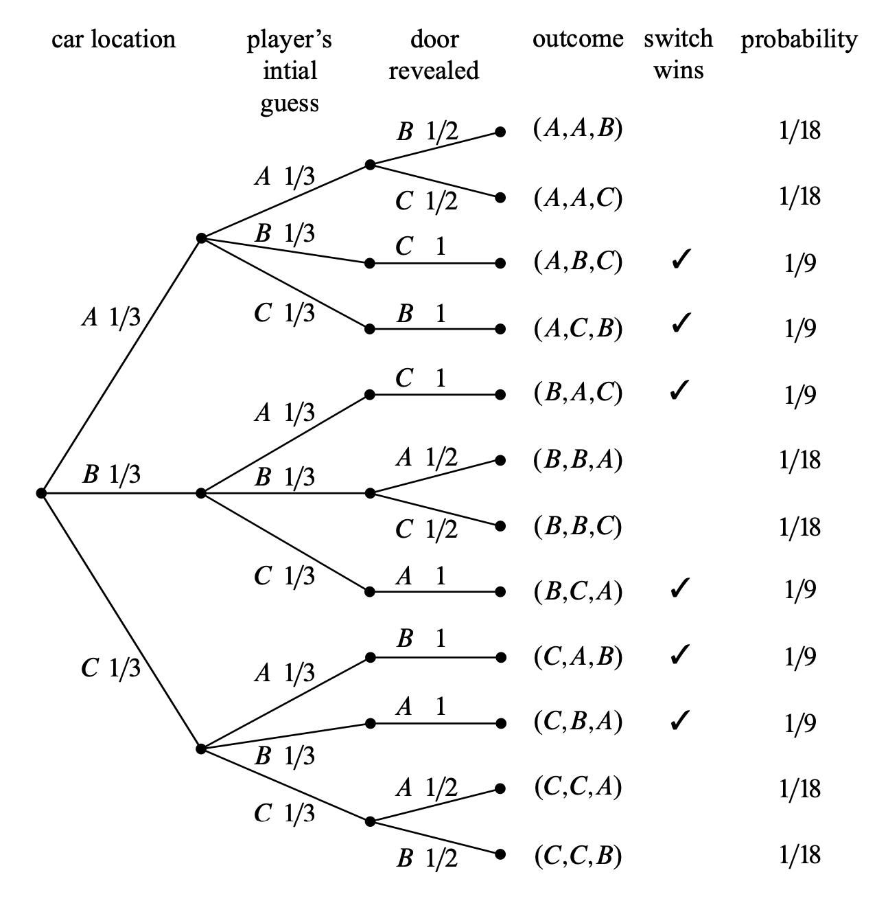
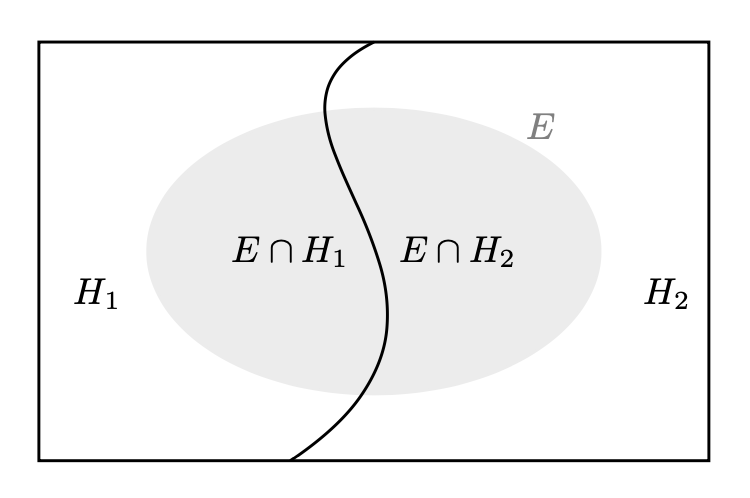

here::here("code", "_common.R") |>
source()27 Probabilità condizionata
In questo capitolo imparerai a:
- comprendere e applicare i concetti di probabilità congiunta, marginale e condizionata;
- approfondire la comprensione e l’applicazione dei principi di indipendenza e probabilità condizionata;
- analizzare e interpretare il paradosso di Simpson;
- applicare il Teorema della Probabilità Composta per calcolare la probabilità di eventi interdipendenti;
- utilizzare il Teorema della Probabilità Totale per scomporre e calcolare probabilità complesse.
Prerequisiti
- Leggere il capitolo Conditional probability di Introduction to Probability (Blitzstein & Hwang, 2019).
Preparazione del Notebook
27.1 Introduzione
La probabilità condizionata si riferisce al calcolo della probabilità di un evento, tenendo conto che un altro evento si è già verificato. Questo concetto è cruciale perché riflette come aggiorniamo le nostre credenze alla luce di nuove evidenze o informazioni. Per esempio, immaginiamo di voler stimare la probabilità di pioggia per domani. La nostra stima iniziale cambia se oggi osserviamo un cielo nuvoloso. Il fatto che oggi sia nuvoloso “condiziona” la nostra valutazione della probabilità di pioggia per domani.
Questo processo di aggiornamento delle nostre credenze in base a nuove osservazioni è continuo. Una nuova evidenza coerente con una credenza esistente potrebbe rafforzarla, mentre un’osservazione inaspettata potrebbe metterla in discussione. La probabilità condizionata non è solo un concetto teorico, ma ha applicazioni pratiche sia nella vita quotidiana che in ambito scientifico. In realtà, si potrebbe argomentare che tutte le probabilità sono in qualche modo condizionate da un certo contesto o da informazioni preesistenti, anche se non sempre lo specifichiamo esplicitamente.
In sintesi, la probabilità condizionata ci fornisce un framework per comprendere e quantificare come le nostre credenze dovrebbero evolversi man mano che acquisiamo nuove informazioni, rendendo il concetto di probabilità uno strumento dinamico e potente per gestire l’incertezza.
27.2 Indipendenza Stocastica
Il concetto di indipendenza è cruciale nel contesto della probabilità condizionata, facilitando notevolmente i calcoli in numerosi problemi e indicando come la presenza di un evento non influenzi l’occorrenza di un altro.
27.2.1 Indipendenza di Due Eventi
Due eventi, \(A\) e \(B\), sono considerati indipendenti se la realizzazione di uno non altera la probabilità di occorrenza dell’altro. Formalmente, questa relazione è espressa come:
\[P(A \cap B) = P(A) P(B),\]
dove \(P(A \cap B)\) è la probabilità che \(A\) e \(B\) si verifichino contemporaneamente. Se questa condizione è verificata, denotiamo \(A \text{ ⫫ } B\), indicando che \(A\) è indipendente da \(B\).
27.2.2 Indipendenza di un Insieme di Eventi
L’indipendenza stocastica è un principio fondamentale nell’applicazione statistica della probabilità. Un insieme di eventi \(\{ A_i : i \in I \}\) è definito indipendente se per ogni sottoinsieme finito \(J\) di \(I\), la probabilità dell’intersezione degli eventi in \(J\) equivale al prodotto delle loro probabilità individuali:
\[P \left( \bigcap_{i \in J} A_i \right) = \prod_{i \in J} P(A_i).\]
Questo implica che ogni combinazione finita di eventi nell’insieme agisce in maniera indipendente.
L’indipendenza può essere assunta o derivata, a seconda del contesto. In alcuni modelli o situazioni, assumiamo l’indipendenza per semplificare i calcoli o per riflettere una conoscenza preesistente. In altri contesti, l’indipendenza può emergere dai dati o da altre proprietà del modello.
27.2.3 Eventi Disgiunti e Indipendenza
Eventi disgiunti, o mutuamente esclusivi, sono quelli che non possono verificarsi contemporaneamente, ossia \(\mathbb{P}(A \cap B) = 0\). Se due eventi disgiunti hanno probabilità positive, essi non possono essere indipendenti, poiché l’equazione \(P(A \cap B) = P(A) P(B)\) non può essere soddisfatta; \(P(A \cap B) = 0\) non uguaglia \(P(A) P(B) > 0\).
27.3 Probabilità Condizionata
La probabilità di un evento è sempre contestualizzata e varia a seconda del nostro stato di informazione. Con un insieme di informazioni disponibile, attribuiamo una probabilità specifica a un evento. Se lo stato informativo cambia, anche la probabilità associata deve essere aggiornata. In sostanza, tutte le probabilità possono essere considerate condizionate, anche se l’evento condizionante non è esplicitato.
La probabilità condizionata di un evento \(A\) dato un altro evento \(B\), con \(P(B) > 0\), è definita come:
\[ P(A \mid B) = \frac{P(A \cap B)}{P(B)}, \]
dove \(P(A \cap B)\) è la probabilità congiunta di \(A\) e \(B\). Questa relazione permette di derivare la regola della moltiplicazione:
\[ P(A \cap B) = P(A \mid B)P(B) = P(B \mid A)P(A), \]
e una forma alternativa della legge della probabilità totale:
\[ P(A) = P(A \mid B)P(B) + P(A \mid B^c)P(B^c), \]
dove \(B^c\) rappresenta il complemento di \(B\).
Per spazi campionari discreti, possiamo esprimere la probabilità condizionata come:
\[ P(A \mid B) = \frac{| A \cap B |}{| B |}. \]
La probabilità condizionata ricalibra lo spazio campionario, riducendolo da \(S\) a \(B\), e non è definita se \(P(B) = 0\).
Esempio 27.1 Lanciamo due dadi equilibrati e vogliamo calcolare la probabilità che la somma dei punteggi ottenuti sia minore di 8.
Inizialmente, quando non abbiamo ulteriori informazioni, possiamo calcolare la probabilità in modo tradizionale. Ci sono 21 risultati possibili con somma minore di 8. Poiché ci sono 36 possibili combinazioni di lancio dei due dadi, la probabilità di ottenere una somma minore di 8 è 21/36, che equivale a circa 0.58.
Supponiamo ora di sapere che la somma del lancio di due dadi ha prodotto un risultato dispari. In questo caso, ci sono solo 18 possibili combinazioni di lancio dei due dadi (dato che abbiamo escluso i risultati pari). Tra essi, vi sono 12 risultati che soddisfano la condizione per cui la somma è minore di 8. Quindi, la probabilità di ottenere una somma minore di 8 cambia da circa 0.58 a 12/18, ovvero 0.67 quando consideriamo l’informazione aggiuntiva del risultato dispari.
Svolgiamo il problema in R:
r <- 1:6
sample <- expand.grid(i = r, j = r)
sample
#> i j
#> 1 1 1
#> 2 2 1
#> 3 3 1
#> 4 4 1
#> 5 5 1
#> 6 6 1
#> 7 1 2
#> 8 2 2
#> 9 3 2
#> 10 4 2
#> 11 5 2
#> 12 6 2
#> 13 1 3
#> 14 2 3
#> 15 3 3
#> 16 4 3
#> 17 5 3
#> 18 6 3
#> 19 1 4
#> 20 2 4
#> 21 3 4
#> 22 4 4
#> 23 5 4
#> 24 6 4
#> 25 1 5
#> 26 2 5
#> 27 3 5
#> 28 4 5
#> 29 5 5
#> 30 6 5
#> 31 1 6
#> 32 2 6
#> 33 3 6
#> 34 4 6
#> 35 5 6
#> 36 6 6event <- subset(sample, i + j < 8)
cat(nrow(event), "/", nrow(sample), "\n")
#> 21 / 36sample_odd <- subset(sample, (i + j) %% 2 != 0)
sample_odd
#> i j
#> 2 2 1
#> 4 4 1
#> 6 6 1
#> 7 1 2
#> 9 3 2
#> 11 5 2
#> 14 2 3
#> 16 4 3
#> 18 6 3
#> 19 1 4
#> 21 3 4
#> 23 5 4
#> 26 2 5
#> 28 4 5
#> 30 6 5
#> 31 1 6
#> 33 3 6
#> 35 5 6event <- subset(sample_odd, i + j < 8)
cat(nrow(event), "/", nrow(sample_odd), "\n")
#> 12 / 18Se applichiamo l’?eq-prob-cond-def, abbiamo: \(P(A \cap B)\) = 12/36, \(P(B)\) = 18/36 e
\[ P(A \mid B) = \frac{12}{18}. \]
Questo esempio illustra come la probabilità di un evento possa variare in base alle informazioni aggiuntive di cui disponiamo. Nel secondo caso, avendo l’informazione che la somma è dispari, la probabilità di ottenere una somma minore di 8 aumenta notevolmente rispetto al caso iniziale in cui non avevamo questa informazione.
Esempio 27.2 Consideriamo uno screening per la diagnosi precoce del tumore mammario utilizzando un test con determinate caratteristiche:
- Sensibilità del test: 90%. Questo significa che il test classifica correttamente come positivo il 90% delle donne colpite dal cancro al seno.
- Specificità del test: 90%. Ciò indica che il test classifica correttamente come negativo il 90% delle donne che non hanno il cancro al seno.
- Prevalenza del cancro al seno nella popolazione sottoposta allo screening: 1% (0.01). Questo è il 1% delle donne che ha effettivamente il cancro al seno, mentre il restante 99% (0.99) non ne è affetto.
Ora cerchiamo di rispondere alle seguenti domande:
Qual è la probabilità che una donna scelta a caso ottenga una mammografia positiva? Poiché il 1% delle donne ha il cancro al seno, la probabilità di ottenere una mammografia positiva (test positivo) è pari alla sensibilità del test, ovvero 0.90 (cioè 90%).
Se la mammografia è positiva, qual è la probabilità che vi sia effettivamente un tumore al seno?
Per risolvere questo problema, consideriamo un campione di 1000 donne sottoposte al test di screening per il tumore al seno. Di queste 1000 donne:
- 10 donne (1% del campione) hanno effettivamente il cancro al seno. Per queste 10 donne con il cancro, il test darà un risultato positivo (vera positività) in 9 casi (90%).
- Per le restanti 990 donne (99% del campione) che non hanno il cancro al seno, il test darà un risultato positivo (falsa positività) in 99 casi (10%).
Questa situazione può essere rappresentata graficamente nel seguente modo:

Combinando i due risultati precedenti, vediamo che il test dà un risultato positivo per 9 donne che hanno effettivamente il cancro al seno e per 99 donne che non lo hanno, per un totale di 108 risultati positivi su 1000. Pertanto, la probabilità di ottenere un risultato positivo al test è \(\frac{108}{1000}\) = 0.108.
Tuttavia, tra le 108 donne che hanno ottenuto un risultato positivo al test, solo 9 hanno effettivamente il cancro al seno. Quindi, la probabilità di avere il cancro al seno, dato un risultato positivo al test, è pari a \(\frac{9}{108}\) = 0.083, corrispondente all’8.3%.
In questo esempio, la probabilità dell’evento “ottenere un risultato positivo al test” è una probabilità non condizionata, poiché calcoliamo semplicemente la proporzione di risultati positivi nel campione totale. D’altra parte, la probabilità dell’evento “avere il cancro al seno, dato che il test ha prodotto un risultato positivo” è una probabilità condizionata, poiché calcoliamo la proporzione delle donne con il cancro al seno tra quelle che hanno ottenuto un risultato positivo al test.
Questo esempio illustra come la conoscenza di ulteriori informazioni (il risultato positivo al test) può influenzare la probabilità di un evento (avere il cancro al seno), mostrando chiaramente la differenza tra probabilità condizionate e non condizionate.
Esempio 27.3 Il problema di Monty Hall è diventato famoso grazie alla rubrica tenuta da Marilyn vos Savant nella rivista Parade, che rispose alla seguente lettera, pubblicata il 9 settembre 1990:
“Supponiamo che tu sia in un quiz televisivo, e ti venga data la scelta tra tre porte. Dietro una delle porte c’è un’auto, dietro le altre due ci sono delle capre. Tu scegli una porta, diciamo la numero 1, e il conduttore, che sa cosa c’è dietro ogni porta, apre un’altra porta, diciamo la numero 3, che contiene una capra. Il conduttore ti chiede quindi se vuoi cambiare la tua scelta e passare alla porta numero 2. È vantaggioso cambiare la scelta?” Craig. F. Whitaker, Columbia, MD
La situazione descritta nella lettera è simile a quella che i concorrenti affrontavano nel quiz televisivo degli anni ’70 Let’s Make a Deal, condotto da Monty Hall e Carol Merrill. Marilyn rispose che il concorrente dovrebbe cambiare la scelta, poiché se l’auto è dietro una delle due porte non scelte (il che è due volte più probabile rispetto alla porta inizialmente scelta), il concorrente vince cambiando porta. Tuttavia, la sua risposta suscitò una reazione a catena, con molte lettere, persino da parte di matematici, che affermavano che avesse torto. Questo episodio diede origine al problema di Monty Hall e innescò migliaia di ore di dibattiti.
Questo incidente sottolinea un aspetto fondamentale della probabilità: spesso, l’intuizione porta a conclusioni completamente errate. Fino a quando non si affinano le capacità nel trattare problemi di probabilità, un approccio rigoroso e sistematico è utile per evitare errori.
Chiarire il Problema
La lettera originale di Craig Whitaker è un po’ vaga, quindi dobbiamo fare delle ipotesi per poter modellare formalmente il gioco. Supponiamo che:
- L’auto sia nascosta in modo casuale ed equiprobabile dietro una delle tre porte.
- Il giocatore scelga una delle tre porte in modo casuale, indipendentemente dalla posizione dell’auto.
- Dopo che il giocatore ha scelto una porta, il conduttore apre un’altra porta, che contiene una capra, e offre al giocatore la possibilità di mantenere la scelta o cambiarla.
- Se il conduttore ha la possibilità di scegliere quale porta aprire (ossia, se ci sono due capre disponibili), sceglie casualmente quale porta aprire.
Con queste assunzioni, possiamo affrontare la domanda: “Qual è la probabilità che un giocatore che cambia porta vinca l’auto?”
Il Metodo in Quattro Passi
Ogni problema di probabilità riguarda un esperimento o un processo casuale. In questi casi, il problema può essere suddiviso in quattro fasi distinte.
Passo 1: Trovare lo Spazio Campionario
Il primo passo è identificare tutti i possibili esiti dell’esperimento. Nel problema di Monty Hall, ci sono tre quantità determinate casualmente:
- La porta che nasconde l’auto.
- La porta scelta inizialmente dal giocatore.
- La porta che il conduttore apre per rivelare una capra.
Un diagramma ad albero può aiutarci a visualizzare il problema, dato che il numero di esiti non è troppo grande e la struttura è semplice. Il primo evento casuale è la posizione dell’auto, che rappresentiamo con tre rami in un albero. Ogni ramo corrisponde a una delle porte. La seconda quantità casuale è la porta scelta dal giocatore, rappresentata nel secondo livello dell’albero, e la terza quantità casuale è la porta che il conduttore apre, mostrata nel terzo livello.
Ecco un esempio di diagramma ad albero che rappresenta questa situazione:

Nel diagramma ad albero, i rami rappresentano le possibili combinazioni delle porte, e le foglie rappresentano gli esiti dell’esperimento. Ogni foglia dell’albero rappresenta un esito dello spazio campionario, che nel nostro caso è composto da 12 esiti. Per esempio, (Car A, Pick B, Reveal C).
Passo 2: Definire gli Eventi di Interesse
L’evento di interesse è “il giocatore vince cambiando porta”. Questo significa che, se la porta scelta dal giocatore inizialmente non contiene l’auto, e il giocatore decide di cambiare porta, allora vincerà. Gli esiti favorevoli sono quelli in cui la porta inizialmente scelta dal giocatore non nasconde l’auto, e cambiando porta il giocatore sceglie correttamente la porta che nasconde l’auto.
Gli esiti che soddisfano questa condizione sono:
(Car A, Pick B, Reveal C)(Car A, Pick C, Reveal B)(Car B, Pick A, Reveal C)(Car B, Pick C, Reveal A)(Car C, Pick A, Reveal B)(Car C, Pick B, Reveal A)
Questi esiti sono 6 in totale.
Passo 3: Calcolare le Probabilità degli Esiti
Ogni esito ha una certa probabilità di verificarsi. Il modo per determinare la probabilità di ciascun esito è moltiplicare le probabilità lungo il percorso nell’albero.
Esempio di calcolo per l’esito (Car A, Pick B, Reveal C):
- La probabilità che l’auto sia dietro la porta A è \(\frac{1}{3}\).
- La probabilità che il giocatore scelga la porta B è \(\frac{1}{3}\).
- La probabilità che il conduttore apra la porta C (che contiene una capra) è \(1\) (poiché il conduttore deve aprire una porta con una capra, e la porta C è l’unica possibile).
La probabilità totale per questo esito è:
\[ P(\text{Car A, Pick B, Reveal C}) = \frac{1}{3} \times \frac{1}{3} \times 1 = \frac{1}{9}. \]
Procedendo in modo simile per tutti gli altri esiti, otteniamo le probabilità per tutti i 12 esiti.
Passo 4: Calcolare le Probabilità degli Eventi
La probabilità di vincere cambiando porta è data dalla somma delle probabilità degli esiti favorevoli elencati sopra.
\[ \begin{aligned} P&(\text{vincere cambiando porta}) = \notag \\ &\quad P(\text{Car A, Pick B, Reveal C}) + P(\text{Car A, Pick C, Reveal B}) + \notag\\ &\quad P(\text{Car B, Pick A, Reveal C}) + \dots \notag \end{aligned} \]
\[ = \frac{1}{9} + \frac{1}{9} + \frac{1}{9} + \frac{1}{9} + \frac{1}{9} + \frac{1}{9} = \frac{6}{9} = \frac{2}{3}. \]
La probabilità di vincere mantenendo la scelta originale è semplicemente il complemento:
\[ P(\text{vincere mantenendo la scelta}) = 1 - P(\text{vincere cambiando porta}) = 1 - \frac{2}{3} = \frac{1}{3}. \]
La conclusione è che il giocatore ha una probabilità di vincere pari a \(\frac{2}{3}\) se cambia porta, contro una probabilità di \(\frac{1}{3}\) se mantiene la sua scelta iniziale. Cambiare porta è quindi la strategia vincente. Questo risultato controintuitivo è il motivo per cui il problema di Monty Hall ha causato tanta confusione inizialmente.
Il problema di Monty Hall è un classico esempio di probabilità condizionata perché la probabilità di vincere l’auto dipende da informazioni aggiuntive ottenute durante il gioco, cioè la porta che il conduttore apre. Inizialmente, la probabilità di trovare l’auto dietro la porta scelta dal giocatore è \(\frac{1}{3}\), mentre la probabilità che l’auto sia dietro una delle altre due porte è \(\frac{2}{3}\).
Quando il conduttore apre una porta mostrando una capra, fornisce nuove informazioni che cambiano le probabilità. Questa nuova informazione condiziona la probabilità che l’auto sia dietro la porta non scelta dal giocatore, facendo sì che la probabilità di vincere cambiando porta diventi \(\frac{2}{3}\). Quindi, il problema di Monty Hall è un esempio di probabilità condizionata perché l’aggiornamento delle probabilità dipende da un evento intermedio (la scelta della porta aperta dal conduttore).
Esempio 27.4 Per confermare il risultato inaspettato del Problema di Monty Hall, è possibile eseguire una simulazione. In questa simulazione, consideriamo due scenari: uno in cui il concorrente mantiene la sua scelta iniziale e un altro in cui cambia la sua scelta dopo che Monty Hall ha svelato una capra. Ripetendo questa simulazione migliaia di volte, possiamo confrontare i risultati empirici e confermare come effettivamente il cambiamento di scelta aumenti le probabilità del concorrente di vincere l’automobile.
Di seguito è riportato lo script di una simulazione progettata per illustrare il paradosso di Monty Hall.
set.seed(123) # For reproducibility
porte <- c("capra1", "capra2", "macchina") # Define the game
counter <- 0
contatore_cambio <- 0
n <- 10000
porta_vincente <- "macchina"
for (i in 1:n) {
scelta_casuale <- sample(porte, 1)
porte_rimaste <- porte[porte != scelta_casuale]
porta_rivelata <- sample(porte_rimaste[porte_rimaste != porta_vincente], 1)
porta_alternativa <- porte[porte != scelta_casuale & porte != porta_rivelata]
if ("macchina" %in% porta_alternativa) {
contatore_cambio <- contatore_cambio + 1
}
if (scelta_casuale == "macchina") {
counter <- counter + 1
}
}
cat(counter / n, "\n") # Proportion of wins without changing the door
#> 0.334
cat(contatore_cambio / n, "\n") # Proportion of wins by changing the door
#> 0.666La simulazione mostra che, effettivamente, la probabilità di vincere la macchina aumenta quando il concorrente sceglie di cambiare porta.
27.3.1 Il paradosso di Simpson
Nel campo della probabilità condizionata, uno dei fenomeni più interessanti e, nel contempo, più controintuitivi, è rappresentato dal paradosso di Simpson. Il paradosso di Simpson è un fenomeno statistico in cui una tendenza che appare in diversi gruppi separati di dati scompare o si inverte quando i dati vengono combinati. Questo paradosso mette in luce l’importanza di considerare le variabili confondenti e di analizzare i dati con attenzione per evitare conclusioni errate.
Esempio 27.5 Due psicoterapeuti, Rossi e Bianchi, praticano due tipi di terapie: terapia per disturbi d’ansia e coaching per migliorare le prestazioni lavorative. Ogni terapia può avere un esito positivo o negativo.
I rispettivi bilanci dei due terapeuti sono riportati nelle seguenti tabelle.
Rossi
| Tipo di terapia | Successo | Fallimento |
|---|---|---|
| Disturbi d’ansia | 70 | 20 |
| Coaching lavorativo | 10 | 0 |
| Totale | 80 | 20 |
Bianchi
| Tipo di terapia | Successo | Fallimento |
|---|---|---|
| Disturbi d’ansia | 2 | 8 |
| Coaching lavorativo | 81 | 9 |
| Totale | 83 | 17 |
Rossi ha un tasso di successo superiore a Bianchi nella terapia per i disturbi d’ansia: 70 su 90 rispetto a 2 su 10. Anche nel coaching lavorativo, Rossi ha un tasso di successo superiore: 10 su 10 rispetto a 81 su 90. Tuttavia, se aggregiamo i dati dei due tipi di terapia per confrontare i tassi di successo globali, Rossi è efficace in 80 su 100 terapie, mentre Bianchi in 83 su 100: il tasso di successo globale di Bianchi risulta superiore!
Questo fenomeno è un esempio del paradosso di Simpson, dove una tendenza osservata in diversi gruppi si inverte quando i gruppi sono combinati.
Per essere più precisi, possiamo calcolare i tassi di successo per ciascun terapeuta e per ciascun tipo di terapia, oltre al tasso di successo globale.
- Rossi
- Tasso di successo in terapia per disturbi d’ansia: \(\frac{70}{70+20} = \frac{70}{90} \approx 0.778\)
- Tasso di successo in coaching lavorativo: \(\frac{10}{10+0} = \frac{10}{10} = 1\)
- Tasso di successo globale: \(\frac{70+10}{70+20+10+0} = \frac{80}{100} = 0.8\)
- Bianchi
- Tasso di successo in terapia per disturbi d’ansia: \(\frac{2}{2+8} = \frac{2}{10} = 0.2\)
- Tasso di successo in coaching lavorativo: \(\frac{81}{81+9} = \frac{81}{90} \approx 0.9\)
- Tasso di successo globale: \(\frac{2+81}{2+8+81+9} = \frac{83}{100} = 0.83\)
Quello che sta succedendo è che Rossi, presumibilmente a causa della sua reputazione come terapeuta più esperto, sta effettuando un numero maggiore di terapie per disturbi d’ansia, che sono intrinsecamente più complesse e con una probabilità di successo variabile rispetto al coaching lavorativo. Il suo tasso di successo globale è inferiore non a causa di una minore abilità in un particolare tipo di terapia, ma perché una frazione maggiore delle sue terapie riguarda casi più complessi.
L’aggregazione dei dati tra diversi tipi di terapia presenta un quadro fuorviante delle abilità dei terapeuti perché perdiamo l’informazione su quale terapeuta tende a effettuare quale tipo di terapia. Quando sospettiamo la presenza di variabili di confondimento, come ad esempio il tipo di terapia in questo contesto, è fondamentale analizzare i dati in modo disaggregato per comprendere con precisione la dinamica in atto.
27.4 Teorema della Probabilità Composta
Il Teorema della Probabilità Composta, noto anche come regola moltiplicativa o regola della catena, permette di calcolare la probabilità congiunta di due o più eventi in termini delle loro probabilità individuali e condizionate. Questo teorema deriva direttamente dalla definizione di probabilità condizionata.
Per due eventi \(A\) e \(B\), possiamo esprimere la probabilità congiunta \(P(A \cap B)\) utilizzando la relazione:
\[ P(A \cap B) = P(B)P(A \mid B) = P(A)P(B \mid A). \tag{27.1}\]
Questa formula ci dice che la probabilità che entrambi gli eventi si verifichino è data dalla probabilità che uno dei due eventi accada, moltiplicata per la probabilità che l’altro evento si verifichi dato il primo.
Il teorema della probabilità composta si estende facilmente al caso di \(n\) eventi \(A_1, A_2, \dots, A_n\). In questo caso, la probabilità che tutti gli eventi si verifichino può essere scritta come:
\[ P\left( \bigcap_{k=1}^n A_k \right) = \prod_{k=1}^n P\left( A_k \ \Bigg\lvert \ \bigcap_{j=1}^{k-1} A_j \right). \tag{27.2}\]
Questo significa che per calcolare la probabilità congiunta di tutti gli eventi, dobbiamo moltiplicare:
- La probabilità del primo evento.
- La probabilità del secondo evento, condizionata al primo.
- La probabilità del terzo evento, condizionata ai primi due.
- E così via, fino all’\(n\)-esimo evento, condizionato a tutti quelli precedenti.
Per fare un esempio, consideriamo il caso di quattro eventi \(A_1, A_2, A_3, A_4\). La probabilità congiunta è:
\[ P(A_1 \cap A_2 \cap A_3 \cap A_4) = P(A_1) \cdot P(A_2 \mid A_1) \cdot P(A_3 \mid A_1 \cap A_2) \cdot P(A_4 \mid A_1 \cap A_2 \cap A_3). \]
In questa espressione:
- La probabilità di \(A_1\) è considerata incondizionata.
- La probabilità di \(A_2\) dipende da \(A_1\).
- La probabilità di \(A_3\) dipende sia da \(A_1\) che da \(A_2\).
- La probabilità di \(A_4\) dipende da tutti gli eventi precedenti.
Il Teorema della Probabilità Composta è una delle basi teoriche più importanti della probabilità e viene utilizzato frequentemente in contesti come:
- La modellazione di processi sequenziali o temporali.
- La decomposizione di probabilità complesse in calcoli più semplici.
- La teoria delle reti bayesiane e la probabilità condizionata.
Grazie a questo teorema, possiamo affrontare problemi complessi frammentandoli in parti più gestibili, utilizzando le probabilità condizionate per costruire una soluzione graduale e sistematica.
Esempio 27.6 Da un’urna contenente 6 palline bianche e 4 nere si estrae una pallina per volta, senza reintrodurla nell’urna. Indichiamo con \(B_i\) l’evento: “esce una pallina bianca alla \(i\)-esima estrazione” e con \(N_i\) l’estrazione di una pallina nera. L’evento: “escono due palline bianche nelle prime due estrazioni” è rappresentato dalla intersezione \(\{B_1 \cap B_2\}\) e, per l’Equazione 27.1, la sua probabilità vale
\[ P(B_1 \cap B_2) = P(B_1)P(B_2 \mid B_1). \]
\(P(B_1)\) vale 6/10, perché nella prima estrazione \(\Omega\) è costituito da 10 elementi: 6 palline bianche e 4 nere. La probabilità condizionata \(P(B_2 \mid B_1)\) vale 5/9, perché nella seconda estrazione, se è verificato l’evento \(B_1\), lo spazio campionario consiste di 5 palline bianche e 4 nere. Si ricava pertanto:
\[ P(B_1 \cap B_2) = \frac{6}{10} \cdot \frac{5}{9} = \frac{1}{3}. \]
In modo analogo si ha che
\[ P(N_1 \cap N_2) = P(N_1)P(N_2 \mid N_1) = \frac{4}{10} \cdot \frac{3}{9} = \frac{4}{30}. \]
Se l’esperimento consiste nell’estrazione successiva di 3 palline, la probabilità che queste siano tutte bianche, per l’Equazione 27.2, vale
\[ \begin{aligned} P(B_1 \cap B_2 \cap B_3) &=P(B_1)P(B_2 \mid B_1)P(B_3 \mid B_1 \cap B_2) \notag\\ &=\frac{6}{10}\cdot\frac{5}{9} \cdot\frac{4}{8} \notag\\ &= \frac{1}{6}. \end{aligned} \]
La probabilità dell’estrazione di tre palline nere è invece:
\[ \begin{aligned} P(N_1 \cap N_2 \cap N_3) &= P(N_1)P(N_2 \mid N_1)P(N_3 \mid N_1 \cap N_2)\notag\\ &= \frac{4}{10} \cdot \frac{3}{9} \cdot \frac{2}{8} \notag\\ &= \frac{1}{30}.\notag \end{aligned} \]
27.5 Il Teorema della Probabilità Totale
Il teorema della probabilità totale (o teorema delle partizioni), che abbiamo già discusso nel capitolo precedente, può essere riformulato nei termini della probabilità condizionata. Il teorema afferma che, dato uno spazio campionario \(\Omega\) suddiviso in una partizione di \(n\) eventi mutualmente esclusivi (cioè non sovrapposti) e tali che la loro unione formi \(\Omega\), è possibile calcolare la probabilità di un qualsiasi evento \(E \subseteq \Omega\) sommando la probabilità di \(E\) su ciascun sottoinsieme della partizione, pesata per la probabilità del sottoinsieme.
27.5.1 Definizione Formale
Siano \(H_1, H_2, \dots, H_n\) eventi che costituiscono una partizione dello spazio campionario \(\Omega\), ossia:
- \(H_i \cap H_j = \varnothing\) per \(i \neq j\) (mutualmente esclusivi),
- \(\bigcup_{i=1}^n H_i = \Omega\) (copertura completa dello spazio campionario).
Allora, per ogni evento \(E \subseteq \Omega\), la probabilità di \(E\) è data da:
\[ P(E) = \sum_{i=1}^n P(E \mid H_i)P(H_i), \tag{27.3}\]
dove:
- \(P(E \mid H_i)\) è la probabilità condizionata di \(E\) dato che si è verificato l’evento \(H_i\),
- \(P(H_i)\) è la probabilità dell’evento \(H_i\).
Il teorema afferma dunque che la probabilità di un evento \(E\) può essere calcolata considerando il contributo di ciascun sottoinsieme della partizione. Ogni termine nella somma rappresenta la probabilità di \(E\) “passando” attraverso un sottoinsieme \(H_i\), pesata per la probabilità che \(H_i\) si verifichi.
Il teorema della probabilità totale è cruciale in molte applicazioni della probabilità, in particolare:
- Teorema di Bayes: Fornisce il denominatore necessario per normalizzare la probabilità condizionata e garantire che la distribuzione a posteriori sia valida.
- Problemi con partizioni: È utile per calcolare la probabilità di un evento \(E\) quando si conoscono le probabilità condizionate \(P(E \mid H_i)\) e le probabilità dei sottoinsiemi \(P(H_i)\).
Nella sua forma più semplice, l’applicazione del teorema si basa su una partizione dello spazio campionario \(\Omega\) in due sottoinsiemi disgiunti, \(H_1\) e \(H_2\).

La probabilità di un evento \(E\) può essere calcolata come
\[ P(E) = P(E \cap H_1) + P(E \cap H_2), \]
ovvero
\[ P(E) = P(E \mid H_1) P(H_1) + P(E \mid H_2) P(H_2). \]
In sintesi, l’Equazione 27.3 ci consente di calcolare probabilità complesse sfruttando partizioni dello spazio campionario. È particolarmente utile quando \(P(E \mid H_i)\) e \(P(H_i)\) sono disponibili, consentendo una valutazione della probabilità di \(E\).
Esempio 27.7 Abbiamo tre urne, ciascuna delle quali contiene 100 palline:
- Urna 1: 75 palline rosse e 25 palline blu,
- Urna 2: 60 palline rosse e 40 palline blu,
- Urna 3: 45 palline rosse e 55 palline blu.
Una pallina viene estratta a caso da un’urna anch’essa scelta a caso. Qual è la probabilità che la pallina estratta sia di colore rosso?
Sia \(R\) l’evento “la pallina estratta è rossa” e sia \(U_i\) l’evento che corrisponde alla scelta dell’\(i\)-esima urna. Sappiamo che
\[ P(R \mid U_1) = 0.75, \quad P(R \mid U_2) = 0.60, \quad P(R \mid U_3) = 0.45. \]
Gli eventi \(U_1\), \(U_2\) e \(U_3\) costituiscono una partizione dello spazio campione in quanto \(U_1\), \(U_2\) e \(U_3\) sono eventi mutualmente esclusivi ed esaustivi, ovvero \(P(U_1 \cup U_2 \cup U_3) = 1.0\). In base al teorema della probabilità totale, la probabilità di estrarre una pallina rossa è dunque
\[ \begin{split} P(R) &= P(R \mid U_1)P(U_1) + P(R \mid U_2)P(U_2) + P(R \mid U_3)P(U_3) \\ &= 0.75 \cdot \frac{1}{3}+0.60 \cdot \frac{1}{3}+0.45 \cdot \frac{1}{3} \\ &=0.60. \end{split} \]
27.6 Indipendenza e Probabilità Condizionata
L’indipendenza tra due eventi \(A\) e \(B\) può essere interpretata intuitivamente attraverso la probabilità condizionata. Due eventi sono indipendenti se il verificarsi di uno non influenza la probabilità di verificarsi dell’altro. In altre parole, conoscere che \(B\) è accaduto non modifica la probabilità di \(A\), e viceversa.
Questa relazione può essere formalizzata con le seguenti equazioni:
\[ P(A \mid B) = \frac{P(A \cap B)}{P(B)} = P(A), \]
\[ P(B \mid A) = \frac{P(A \cap B)}{P(A)} = P(B). \]
Pertanto, \(A\) e \(B\) sono indipendenti se e solo se:
\[ P(A \mid B) = P(A), \]
\[ P(B \mid A) = P(B). \]
Queste condizioni significano che la probabilità di \(A\) non cambia, indipendentemente dal fatto che \(B\) sia accaduto, e lo stesso vale per \(B\).
27.6.1 Indipendenza di Tre Eventi
La definizione di indipendenza si estende naturalmente a tre eventi \(A\), \(B\), e \(C\), ma con condizioni aggiuntive. Tre eventi sono indipendenti se:
Ogni coppia di eventi è indipendente:
\[ \begin{align} P(A \cap B) &= P(A) P(B), \\ P(A \cap C) &= P(A) P(C), \\ P(B \cap C) &= P(B) P(C). \end{align} \]
La probabilità congiunta di tutti e tre gli eventi è uguale al prodotto delle loro probabilità individuali:
\[ P(A \cap B \cap C) = P(A) P(B) P(C). \]
Le prime tre condizioni verificano l’indipendenza a coppie (indipendenza a due a due), mentre l’ultima condizione garantisce che i tre eventi siano completamente indipendenti. È importante notare che l’indipendenza a due a due non implica necessariamente l’indipendenza completa: per essere indipendenti nel senso completo, tutte e quattro le condizioni devono essere soddisfatte.
In sintesi, l’indipendenza tra eventi implica che il verificarsi di uno di essi non fornisce alcuna informazione sulla probabilità del verificarsi degli altri. Nel caso di due eventi, questa proprietà si traduce nell’invarianza della probabilità condizionata. Per tre o più eventi, l’indipendenza richiede sia l’indipendenza a coppie sia la condizione più forte sull’intersezione di tutti gli eventi.
Questi concetti sono fondamentali nella probabilità e nella statistica, poiché semplificano molti calcoli e forniscono una base per modelli più complessi.
Esempio 27.8 Consideriamo un esempio utilizzando un mazzo di 52 carte. Ogni seme contiene 13 carte e ci sono 4 regine in totale. Definiamo i seguenti eventi:
- Evento A: pescare una carta di picche,
- Evento B: pescare una regina.
Probabilità con un mazzo completo
In un mazzo completo, la probabilità di pescare una carta di picche (\(P(A)\)) è \(\frac{13}{52} = \frac{1}{4}\), poiché ci sono 13 picche su 52 carte totali. La probabilità di pescare una regina (\(P(B)\)) è \(\frac{4}{52} = \frac{1}{13}\), poiché ci sono 4 regine su 52 carte.
Ora consideriamo la probabilità congiunta di pescare la regina di picche (\(P(AB)\)). Poiché esiste solo una regina di picche nel mazzo, la probabilità di pescare questa specifica carta è \(\frac{1}{52}\).
Secondo la definizione di indipendenza, se gli eventi \(A\) e \(B\) sono indipendenti, allora:
\[ P(AB) = P(A)P(B) \]
Calcoliamo \(P(A)P(B)\):
\[ P(A)P(B) = \left( \frac{1}{4} \right) \left( \frac{1}{13} \right) = \frac{1}{52} \]
Poiché \(P(AB) = \frac{1}{52}\) è uguale a \(P(A)P(B)\), possiamo affermare che gli eventi \(A\) e \(B\) sono indipendenti con un mazzo completo di 52 carte.
Probabilità dopo la rimozione di una carta
Consideriamo ora un mazzo con una carta in meno, ad esempio il due di quadri, riducendo il numero totale di carte a 51. Ricalcoliamo le probabilità con questo mazzo ridotto:
La probabilità di pescare la regina di picche (\(P(AB)\)) è ora \(\frac{1}{51}\), poiché ci sono 51 carte nel mazzo.
Ricalcoliamo anche \(P(A)\) e \(P(B)\):
- \(P(A)\) diventa \(\frac{13}{51}\), poiché ci sono ancora 13 picche, ma su 51 carte.
- \(P(B)\) diventa \(\frac{4}{51}\), poiché ci sono ancora 4 regine, ma su 51 carte.
Ora calcoliamo il prodotto \(P(A)P(B)\) con queste nuove probabilità:
\[ P(A)P(B) = \left( \frac{13}{51} \right) \left( \frac{4}{51} \right) = \frac{52}{2601} \]
Confrontiamo \(P(AB)\) e \(P(A)P(B)\):
\[ \frac{1}{51} \neq \frac{52}{2601} \]
Poiché \(\frac{1}{51} \neq \frac{52}{2601}\), gli eventi \(A\) e \(B\) non sono più indipendenti dopo la rimozione del due di quadri.
Questo esempio mostra come l’indipendenza tra due eventi dipenda dal contesto. Con un mazzo completo, i due eventi sono indipendenti. Tuttavia, rimuovendo una carta dal mazzo, le probabilità cambiano e gli eventi non sono più indipendenti. Questo evidenzia l’importanza di considerare la composizione e le condizioni iniziali quando si analizzano probabilità e indipendenza. Modifiche nella composizione del mazzo possono alterare le probabilità, influenzando le relazioni di indipendenza tra eventi specifici.
27.7 Riflessioni Conclusive
La probabilità condizionata è uno dei concetti fondamentali della statistica, poiché fornisce il quadro teorico necessario per comprendere l’indipendenza statistica e molte altre relazioni tra eventi e variabili.
Un punto chiave è che l’indipendenza implica l’assenza di una associazione tra due variabili. Nei capitoli successivi esploreremo strumenti per misurare la correlazione correlazione, ovvero la presenza e l’intensità di una relazione lineare tra di esse.
La probabilità condizionata ha inoltre permesso di riformulare la legge della probabilità totale, che consente di scomporre probabilità complesse utilizzando partizioni dello spazio campionario. Questa legge si rivela cruciale per il teorema di Bayes, uno degli strumenti cardine dell’inferenza statistica.
In particolare, nel contesto dell’inferenza bayesiana, il condizionamento assume un ruolo fondamentale. Grazie a questo principio, è possibile aggiornare continuamente le credenze o le incertezze riguardo a ipotesi, integrando nuove informazioni man mano che diventano disponibili. Questa capacità di adattamento rende l’inferenza bayesiana uno strumento estremamente flessibile e potente, capace di modellare situazioni complesse e dinamiche.
In sintesi, la probabilità condizionata non solo è essenziale per comprendere l’indipendenza statistica, ma costituisce anche la base di metodi inferenziali avanzati, come l’inferenza bayesiana. Attraverso di essa, possiamo costruire modelli che evolvono e migliorano con l’aggiunta di nuove informazioni, rendendo l’analisi statistica uno strumento dinamico e versatile per interpretare il mondo reale.
Informazioni sull’Ambiente di Sviluppo
sessionInfo()
#> R version 4.4.2 (2024-10-31)
#> Platform: aarch64-apple-darwin20
#> Running under: macOS Sequoia 15.2
#>
#> Matrix products: default
#> BLAS: /Library/Frameworks/R.framework/Versions/4.4-arm64/Resources/lib/libRblas.0.dylib
#> LAPACK: /Library/Frameworks/R.framework/Versions/4.4-arm64/Resources/lib/libRlapack.dylib; LAPACK version 3.12.0
#>
#> locale:
#> [1] C/UTF-8/C/C/C/C
#>
#> time zone: US/Pacific
#> tzcode source: internal
#>
#> attached base packages:
#> [1] stats graphics grDevices utils datasets methods base
#>
#> other attached packages:
#> [1] ggokabeito_0.1.0 see_0.9.0 gridExtra_2.3 patchwork_1.3.0
#> [5] bayesplot_1.11.1 psych_2.4.12 scales_1.3.0 markdown_1.13
#> [9] knitr_1.49 lubridate_1.9.4 forcats_1.0.0 stringr_1.5.1
#> [13] dplyr_1.1.4 purrr_1.0.2 readr_2.1.5 tidyr_1.3.1
#> [17] tibble_3.2.1 ggplot2_3.5.1 tidyverse_2.0.0 rio_1.2.3
#> [21] here_1.0.1
#>
#> loaded via a namespace (and not attached):
#> [1] generics_0.1.3 stringi_1.8.4 lattice_0.22-6 hms_1.1.3
#> [5] digest_0.6.37 magrittr_2.0.3 evaluate_1.0.1 grid_4.4.2
#> [9] timechange_0.3.0 fastmap_1.2.0 rprojroot_2.0.4 jsonlite_1.8.9
#> [13] mnormt_2.1.1 cli_3.6.3 rlang_1.1.4 munsell_0.5.1
#> [17] withr_3.0.2 yaml_2.3.10 tools_4.4.2 parallel_4.4.2
#> [21] tzdb_0.4.0 colorspace_2.1-1 pacman_0.5.1 vctrs_0.6.5
#> [25] R6_2.5.1 lifecycle_1.0.4 htmlwidgets_1.6.4 pkgconfig_2.0.3
#> [29] pillar_1.10.1 gtable_0.3.6 glue_1.8.0 xfun_0.50
#> [33] tidyselect_1.2.1 farver_2.1.2 htmltools_0.5.8.1 nlme_3.1-166
#> [37] rmarkdown_2.29 compiler_4.4.2Bibliografia
Blitzstein, J. K., & Hwang, J. (2019). Introduction to probability. CRC Press.